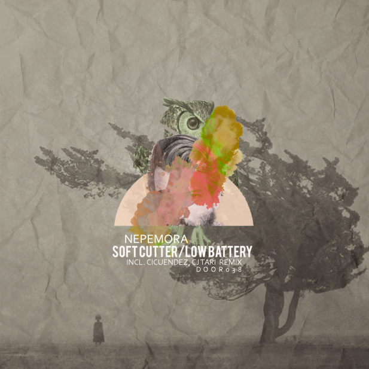

038 - Soft cutter / Low battery
Nepemora
After a short stop during the summer, Door67 comes back with full energy and meeting more artists to the family. Nepemora who signs the two orignal tracks, between techno and tech-house. The pack is completed by two remixes from CJ Tare and Cicuendez. Enjoy... and cross the Door.